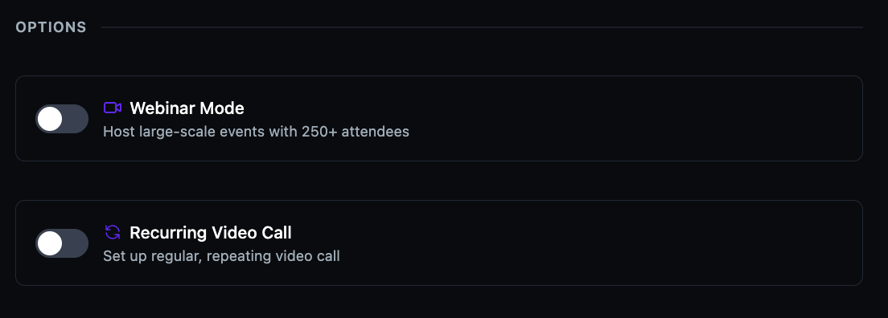

Set up a recurring session
Schedule a video session that repeats automatically on a regular basis — weekly, biweekly, or at another frequency. Set it once and the platform creates each occurrence for you.
Before you get started
- You must have an Admin or Moderator role.
- You need to start creating a video session first. See Schedule a live session.
Enable recurring video call
- During session creation, scroll to the Options section.
- Toggle Recurring Video Call on.

Set the repeat frequency
- Select a repeat frequency from the Repeats dropdown (e.g., Weekly).
- Optionally set an End Date to stop the recurrence after a specific date. If no end date is set, the session repeats indefinitely.
- Continue with the rest of the session setup and click Create Call ✓ to publish.

Tip: Recurring sessions are ideal for weekly office hours, team standups, or regular community meetups. Members who register for one occurrence are automatically registered for all future ones.